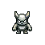
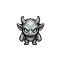
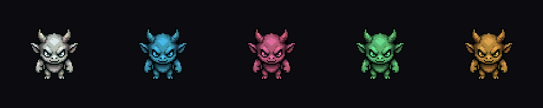

B(전투 크리처) 느낌 유지 + 더 단순하게 + 색 시스템 정합(밝은 중립 몸 = 틴트 가능·예약 4색 회피). 뿔·사나운 눈으로 비스트 정체성은 형태로 잡고, 디테일은 절제. 그리고 스킨 스왑이 실제로 도는지 검증했다.



스킨 ✅: 몸이 밝은 중립색(틴트 마스터)이라 흰→시안→핑크→민트→앰버로 깨끗이 스왑됨(외곽·눈은 어둡게 유지). design-system 스킨 8색이 그대로 적용 가능. 지난 다크네이비+시안 고정 버전은 스왑 불가였는데, 이번엔 됨.
무기 ✅: 몸이 예약 4색(🔵🔴🟡🟣)을 차지하지 않음 → 무기 포드/VFX(카테고리색)가 또렷이 읽힘. 무기는 분리 방식 유지(크리처가 손에 안 듦). 시안 스킨(#55CCFF)은 🔵원거리(#4DABF7)와 명도차로 구분 — design-system이 이미 간격 설계.
다음: 단순화 정도(32/48) 정하면 → 그 1종으로 8방향 풀세트 + idle/walk 애니(PixelLab Tier2 = 월 2천장, 크레딧 여유) → 게임 실제 움직임 확인 → design-system hero_character 반영(리드).
① 단순화 정도 (32 매우미니멀 / 48 약간 형태) · ② 이 크리처로 확정? 정하면 8방향 + 애니 뽑아 게임 움직임까지 확인합니다. ("더 이렇게" 피드백도 환영 — 뿔 모양·눈·비율 등.)